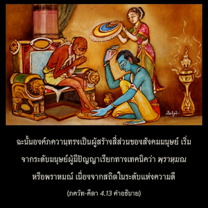

ตามสามระดับของธรรมชาติวัตถุ และงานที่สัมพันธ์กับระดับต่างๆนั้น ข้าเป็นผู้สร้างสี่ส่วนของสังคมมนุษย์ ถึงแม้ว่าข้าเป็นผู้สร้างระบบนี้ เธอควรรู้ว่าข้ามิใช่ผู้กระทำ และข้าไม่เปลี่ยนแปลง

องค์ภควานฺทรงเป็นผู้สร้างทุกสิ่งทุกอย่าง ทุกสิ่งทุกอย่างกำเนิดมาจากพระองค์ พระองค์ทรงค้ำจุนทุกสิ่งทุกอย่าง และหลังจากการทำลายล้างทุกสิ่งทุกอย่างจะพำนักอยู่ในพระองค์ ฉะนั้นองค์ภควานฺทรงเป็นผู้สร้างสี่ส่วนของสังคมมนุษย์ เริ่มจากระดับมนุษย์ผู้มีปัญญาเรียกทางเทคนิคว่า พฺราหฺมณ หรือพราหมณ์ เนื่องจากสถิตในระดับแห่งความดี ถัดไปเป็นระดับบริหารเรียกทางเทคนิคว่า กฺษตฺริย หรือกษัตริย์ เนื่องจากสถิตในระดับแห่งตัณหา พ่อค้าวาณิชหรือ ไวศฺย สถิตในระดับผสมผสานระหว่างตัณหาและอวิชชา และ ศูทฺร หรือระดับใช้แรงงานสถิตในระดับอวิชชาของธรรมชาติวัตถุ ถึงแม้ว่าองค์ศฺรี กฺฤษฺณทรงเป็นผู้สร้างสี่ส่วนของสังคมมนุษย์ แต่พระองค์ทรงมิได้อยู่ในส่วนใดส่วนหนึ่ง เนื่องจากพระองค์ทรงมิได้เป็นพันธวิญญาณที่อยู่ในส่วนใดส่วนหนึ่งของสังคมมนุษย์ สังคมมนุษย์นั้นคล้ายกับสังคมสัตว์ทั่วไป แต่เพื่อยกระดับสภาพความเป็นสัตว์พระองค์จึงทรงสร้างการแบ่งส่วนเพื่อพัฒนากฺฤษฺณจิตสำนึกอย่างเป็นระบบ นิสัยชอบหรือถนัดในเรื่องการทำงานขึ้นอยู่กับระดับของธรรมชาติวัตถุที่ตนได้รับ ลักษณะอาการของชีวิตตามระดับต่างๆของธรรมชาติวัตถุจะอธิบายในบทที่สิบแปดของหนังสือเล่มนี้ อย่างไรก็ดีบุคคลในกฺฤษฺณจิตสำนึกอยู่เหนือแม้แต่ พฺราหฺมณ แม้โดยคุณสมบัติ พฺราหฺมณ ควรทราบเกี่ยวกับ พฺรหฺมนฺ หรือสัจธรรมสูงสุดแต่ส่วนใหญ่พวก พฺราหฺมณ จะเข้าหา พฺรหฺมนฺ อันไร้รูปลักษณ์ขององค์กฺฤษฺณเท่านั้น แต่ผู้ที่ข้ามพ้นขีดจำกัดแห่งความรู้ของ พฺราหฺมณ และบรรลุถึงความรู้แห่งบุคลิกภาพสูงสุดแห่งพระเจ้าองค์ศฺรี กฺฤษฺณจะมาเป็นบุคคลในกฺฤษฺณจิตสำนึก หรือ ไวษฺณว กฺฤษฺณจิตสำนึกจะรวมถึงความรู้แห่งองค์อวตารทั้งหลายขององค์กฺฤษฺณ เช่น พระราม นฺฤสึห , วราห ฯลฯ ในฐานะที่องค์กฺฤษฺณทรงเป็นทิพย์อยู่เหนือระบบสี่ส่วนแห่งสังคมมนุษย์นี้บุคคลในกฺฤษฺณจิตสำนึกก็อยู่เหนือการแบ่งส่วนทั้งหลายในสังคมมนุษย์ ไม่ว่าจะเป็นการแบ่งส่วนในระดับกลุ่มชน ระดับชาติ หรือระดับเผ่าพันธุ์